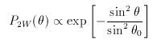
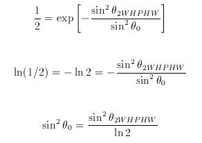
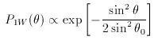
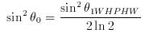
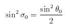
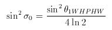

|
It is common to see the (two-way) polar diagram of the
main-lobe for a (vertically directed) radar beam described as:

where θ is the angle from zenith and θ0
is the e-1 half-width, i.e. the half-width of the beam
at which P2W drops to 0.368 of its peak value; the term
two-way refers to the fact that the same antenna is used for
transmission and reception. The beam width can alternatively be
described in terms of the (two-way) half-power half-width,
θ2WHPHW, i.e. the half-width of the beam at which
P2W drops to 0.5 of its peak value; the relationship
between &theta0 and θ2WHPHW can be
derived from the ratio of P2W(θ2WHPHW)
to P2W(0) through the following steps:

However, the beam width is often described in terms of the
ONE-WAY half-power half-width, θ1WHPHW, i.e. for
the antenna used only for transmission OR reception. The one-way
polar diagram of the main-lobe is simply the square root of the
two-way case, i.e:

and it can be shown, using the same steps as above for the
two-way case, that &theta0 and θ1WHPHW
are related through the expression:

Finally, it is useful to define the two-way polar diagram in
terms of standard Gaussian notation:

i.e. with a factor of 2 in the denominator of the exponent so
that the measure of beam width, σ0, is the standard
deviation, i.e. the e-1/2 half-width or the half-width of
the beam at which P2W drops to 0.607 of its peak value;
&sigma0 and θ0 are related through the
expression:

so that:

This description of beam width is required for correcting
(standard deviation) radar return spectral widths for the effects of
beam broadening. Note, however, that the spectral widths in the
existing files of NERC MST Radar data are defined in a non-standard
way; the values must therefore be multiplied by a scaling factor of
1.25 (explained in the file format page). The NERC MST Radar has a
one-way half-power half-width of 1.5°,
i.e. sin2σ0 = 2.47 ×
10-4. Boundary-layer wind-profilers tend to have one-way
half-power half-widths of the order of 5°.
Internal Links:
- Return to top of page
- Wind-profiler beam steering
- Correction of spectral widths for the
effects of beam broadening
- File format for existing MST Radar
radial data
|